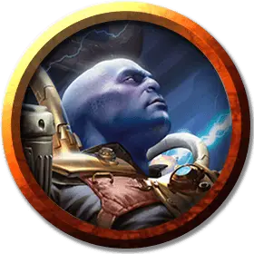

Гальванический взрывоискатель
Galvanic Blastseeker
Средний Гуманоид (Любая раса), хаотично-нейтральный

Класс Доспеха 13
Хиты 52 (8к8 + 16)
Скорость 30 футов
| мод | спас | ||
|---|---|---|---|
| СИЛ | 10 | +0 | +0 |
| ЛОВ | 17 | +3 | +6 |
| ТЕЛ | 14 | +2 | +2 |
| мод | спас | ||
|---|---|---|---|
| ИНТ | 19 | +4 | +4 |
| МДР | 10 | +0 | +0 |
| ХАР | 13 | +1 | +1 |
Навыки Акробатика +6, Восприятие +3, Магия +7
Чувства пассивное Восприятие 13
Языки Общий, Первичный, плюс один любой язык
Опасность 5 (1800 опыта)
Бонус мастерства +3
Особенности
Гальванический покров (перезарядка 5–6). Когда взрывоискатель накладывает заклинания молния [lightning bolt] или волна грома [thunderwave], он может бросить любую кость. Если в результате выпало нечетное значении взрывоискатель получает 9 (2к8) урона силовым полем. При четном значении эти заклинания также наносят дополнительный 9 (2к8) урона электричеством каждой цели, провалившей спасбросок.
Прыжок с порывами ветра. Искатель взрыва может использовать бонусное действие, чтобы пролететь до 10 футов, не провоцируя атак.
Сердце бури. Когда взрывоискатель накладывает заклинания молния [lightning bolt] или волна грома [thunderwave], все остальные существа в пределах 10 футов от него получают по 3 урона электричеством.
Врожденное колдовство. Базовой характеристикой заклинаний взрывоискателя является Интеллект (Сл спасброска от заклинаний 15, +7 к попаданию атаками заклинаниями). Он может накладывать следующие заклинания, не требуя никаких компонентов, кроме своего снаряжения Иззетов, которое не работает для других:
• 3/день каждое: левитация [levitate], молния [lightning bolt], волна грома [thunderwave];
• 1/день: каменная кожа [stoneskin].
Действия
Копьё. . Дальнобойная или рукопашная атака оружием: +3 к попаданию, досягаемость 5 фт. или дистанция 20/60 фт., одна цель. Попадание: 3 (1к6) колющего урона или 4 (1к8) колющего урона, если используется двумя руками для рукопашной атаки.
Описание
В то время как химики сосредотачиваются на изобретении новых инструментов, оружия и других устройств для использования гильдией, роль искателя взрыва состоит в том, чтобы заставить эти устройства работать. Несмотря на название, не все такие устройства производят взрывы, но все самые интересные (с точки зрения Иззетов) производят.
Миззикс из Измагнуса
Миззикс - гоблин-гальваник, начавшая свою карьеру в Иззете в качестве низшего служителя. Но она быстро завоевала место в собственной магической кузнице с эскадроном помощников. Благодаря природному таланту, продуманным политическим ходам и удачным случайностям Мизикс поднялась до высшей должности при дворе Лиги Иззетов, заняв место Измагнуса.